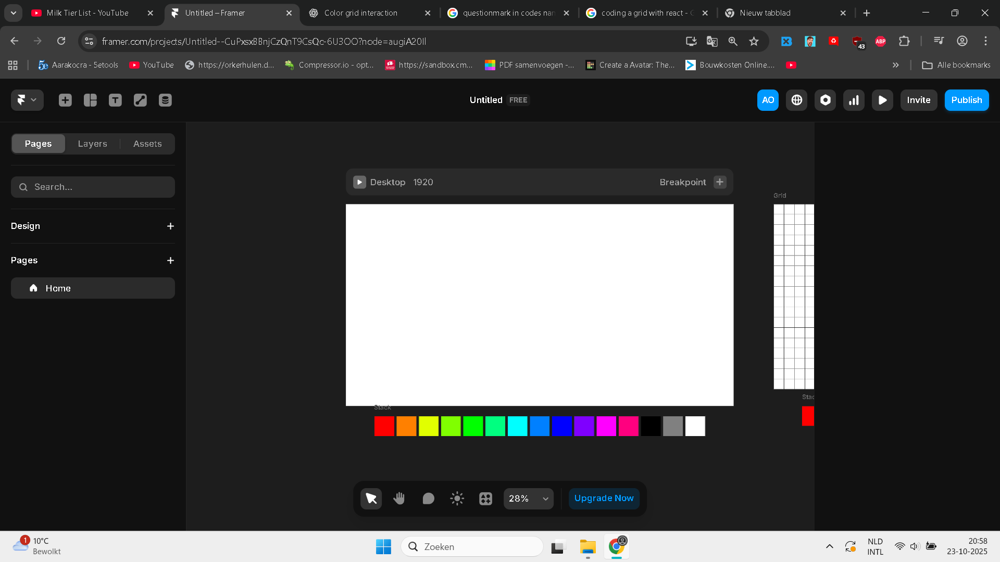
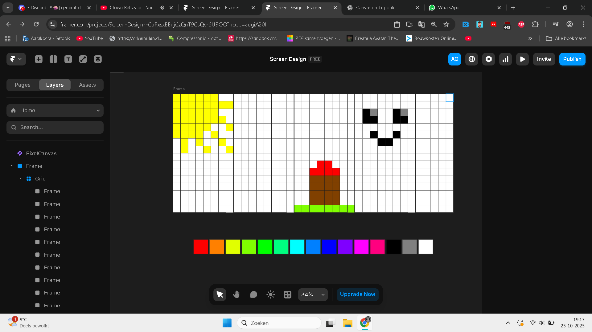
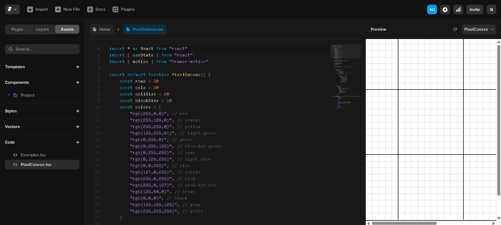
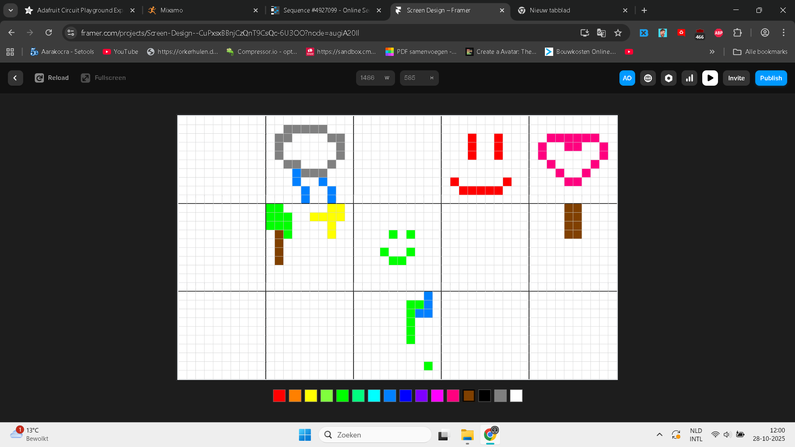

Ik was van plan om een canvas te ontwerpen en coderen in Framer. Die canvas bestaat uit vijftien kleinere canvassen waarin je kunt tekenen. Het doel hierachter is dat elke gebruiker een kleine canvas kan inkleuren, waardoor zij samen één grote tekening maken.
Het eerste wat ik deed was een simpel ontwerp maken van het canvas. Ik begon eerst met een rij van kleuren toevoegen. Ik koos de kleuren van het kleurenwiel.

Ik had daarna de canvas wat duidelijker gemaakt. Ik voegde vierkantjes toe en verdeelde het canvas in 10 kleinere canvassen. Ik heb ook de kleur bruin toegevoegd, omdat deze niet in het kleurenwiel zat en om de gebruikers meer keuzes te geven.

Daarna was ik begonnen met het schrijven van de code. Dit was erg lastig, omdat er geen goede documentatie was voor het maken van een canvas met Framer. Ik maakte eerst de grid en daarna voegde ik de rij met kleuren toe.

Toen ik klaar was met programmeren, was het mij gelukt om een canvas te maken in Framer. Je kunt nu de vakjes inkleuren met de kleur die je hebt gekozen.
